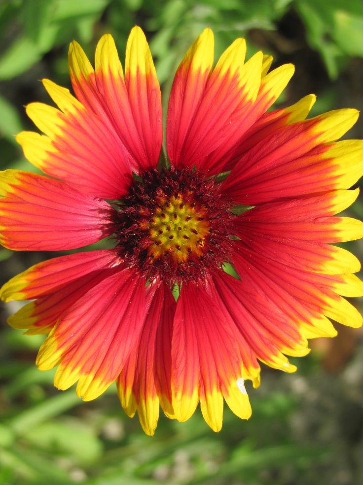
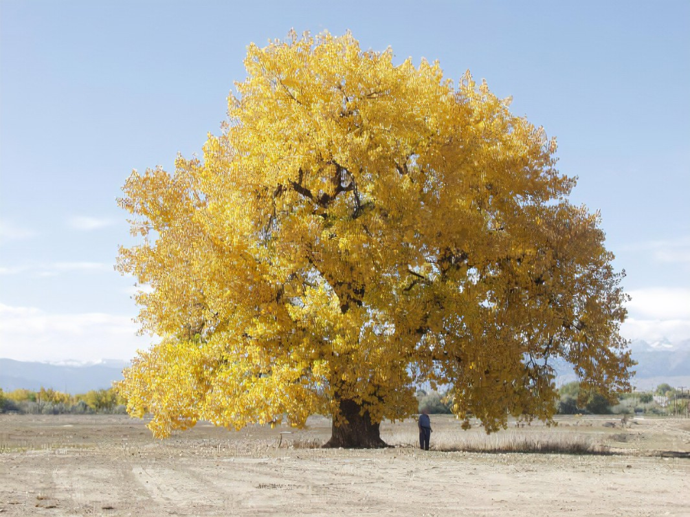

Wyoming
Wyoming became the 44th state to join the union in 1890. Wyoming was the first U.S. state to allow women to vote–an achievement that represented one of the early victories of the American women’s suffrage movement. Today, although it is the 10th largest state by area, Wyoming has the smallest population of all the states, with just over 550,000 residents. The state is home to most of Yellowstone National Park, one of the most popular national parks in the country. Millions of tourists visit Wyoming every year to see the geyser Old Faithful and the Grand Prismatic Spring, the largest hot spring in the country, as well as a variety of wildlife including moose, elk, bighorn sheep, wolves, coyotes, eagles, black bears and grizzly bears.
| Date of Statehood | Capital | Population | Size |
|---|---|---|---|
| July 10, 1890 | Cheyenne | 576,851 | 97,916 square miles |
Motto
Equal Rights
Flower
Indian Paintbrush
Bird
Meadowlark

Tree
Plains Cottonwood
Interesting facts
- President Theodore Roosevelt designated Devils Tower—a natural rock formation resulting from a volcanic intrusion and a sacred site for many Plains Indians—the first national monument in the U.S. on September 24, 1906.
- Henry Longabaugh received the nickname “Sundance Kid” after serving time in prison between 1887 and 1889 for stealing a horse in Sundance, Wyoming. He later met Butch Cassidy and joined the notorious Wild Bunch.
- In 1949, a massive blizzard blanketed Wyoming, killing 17 people, 55,000 cattle and 105,000 sheep.
- Wyoming is the leading producer of coal in the United States; in 2010, the state produced 40 percent of the nation’s total